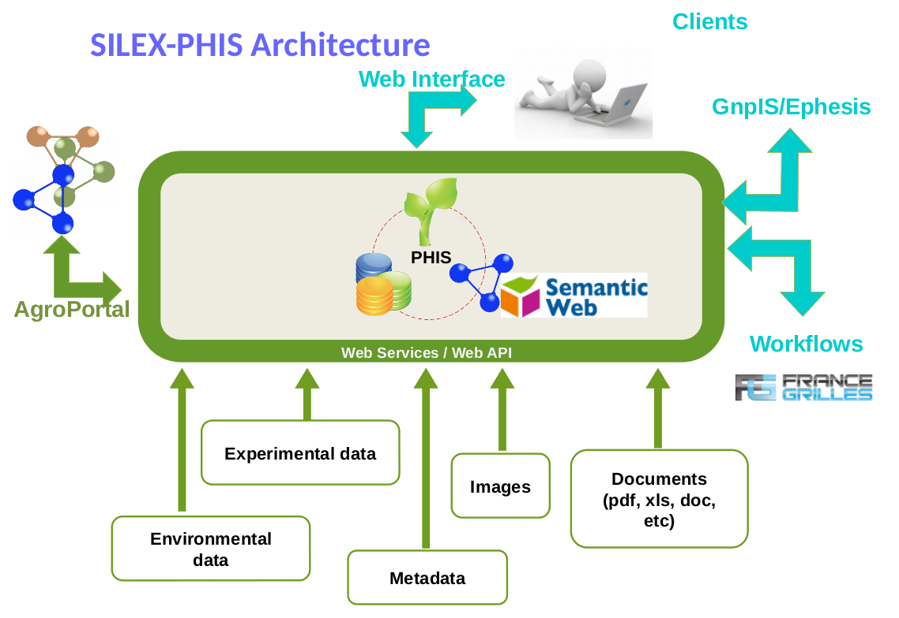
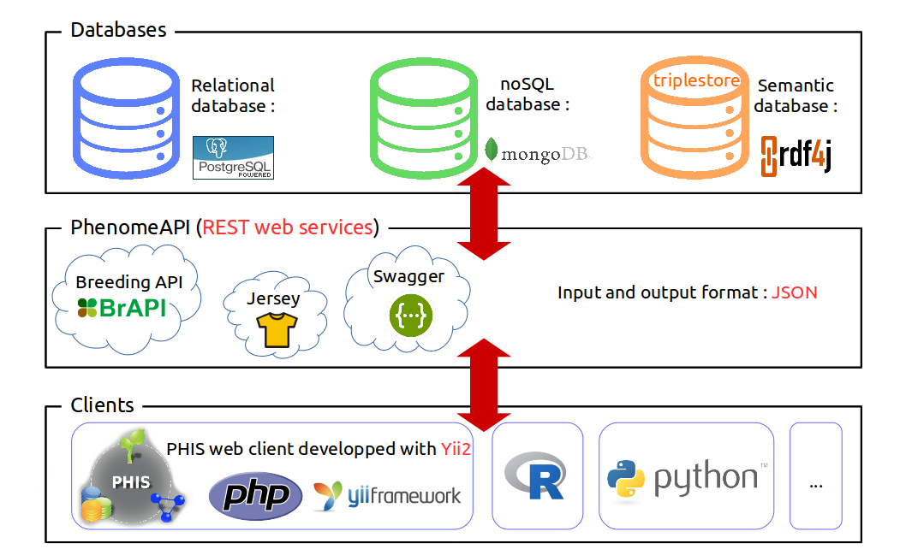

OpenSILEX PHIS users documentation
Background
OpenSILEX PHIS (Phenotyping Hybrid Information System) is developped for high-throughput plant phenotyping in close interaction to plant phenotyping communities. Phis is part of OpenSILEX collaborative meta-project developped at MISTEA joint research unit (INRA - SupAgro). More information on OpenSILEX is available at montpellier.inra.fr. The present documentation is a resource material related to the new version of OpenSILEX PHIS.

Phis is organized around three layers : the layer of the data storage (first layer), which the users do not access directly, but using clients (3rd layer) which interact with the data layer through the web services layer (2nd layer).

Contributors
Contributors to this documentation are agents of the INRA - SupAgro joint research units MISTEA and LEPSE in Montpellier :
- Alice Boizet
- Andréas Garcia
- Anne Tireau
- Arnaud Charleroy
- Llorenç Cabrera-Bosquet
- Morgane Vidal
- Pierre-Etienne Alary
- Vincent Migot
Every Phis user is welcomed to enrich this repository with her/his experience of the information system.
Issues
This documentation is currently under developpement. If a OpenSILEX PHIS user wish to point out a flaw in this documentation, he is welcomed to do so in this repository's GitHub issues.
Concerning issues with OpenSILEX PHIS itself, users are invited to report them via the GitHub issues of the repositories causing trouble, for instance phis-ws/issues for problems concerning the Web services and phis-webapp/issues for issues with the Web client.
OpenSILEX development team can also be contacted through its official email address opensilex@gmail.com or through the mailing list opensilex-help@groupes.renater.fr when reporting a bug or seeking help.
Keep up to date
In order to keep abreast of the latest OpenSILEX PHIS development, one can :
- follow our twitter feed @OpenSilex
- subscribe to the opensilex@groupes.renater.fr mailing list for generic information
- subscribe to the opensilex-dev@groupes.renater.fr mailing list for technical updates
References
Pilot version of Phis (different to the one presented here) described in Neveu, Pascal, et al. "Dealing with multi‐source and multi‐scale information in plant phenomics: the ontology‐driven Phenotyping Hybrid Information System." New Phytologist (2018). An interactive web user interface of the pilot version of Phis is available at phis.inra.fr.
The current version of OpenSILEX PHIS is presented on the webpage opensilex.org.
Version
© OpenSILEX v.3.2 - May 15, 2019 ; Software is licensed under AGPL-3.0 and data under CC BY-NC-SA 4.0